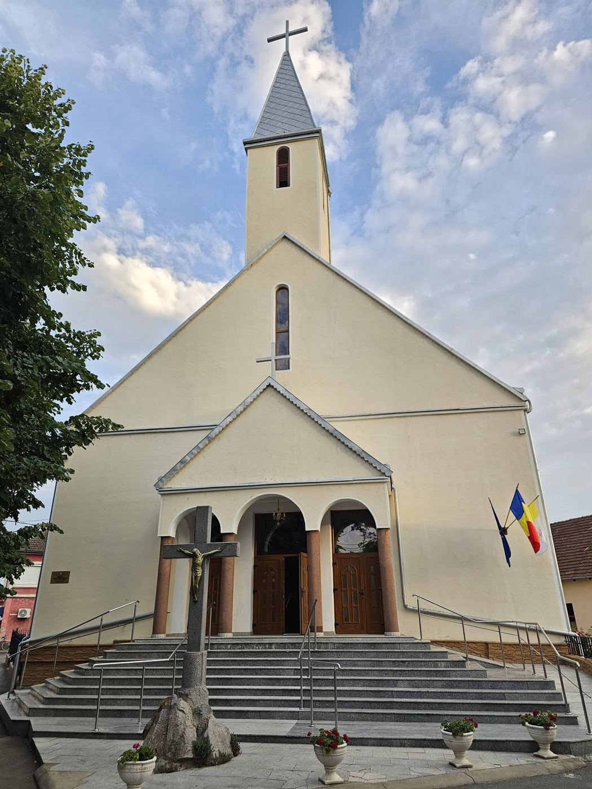

Parohiile protopopiatului / Beiuș
Biserica Greco-Catolică „Sfinții Trei Ierarhi”

- Hram
- Sfinții Trei Ierarhi: Vasile cel Mare, Grigore Teologul și Ioan Gură de Aur
- Sărbătoarea hramului
- 30 ianuarie
- Preot paroh
- pr. Zorel Zima, paroh și protopop de Beiuș
- Adresă
- Calea Bihorului nr. 28, 415200 Beiuș, jud. Bihor
- Program
- Programul slujbelor
Situația actuală
Biserica este lăcașul de cult al Parohiei Greco-Catolice Beiuș, din Eparhia Greco-Catolică de Oradea. Parohul este pr. Zorel Zima, care din 2015 este și protopop de Beiuș. Hramul se sărbătorește în jurul zilei de 30 ianuarie, cu Sfânta Liturghie la care participă preoți din tot protopopiatul.
În 2020, după ample lucrări în interior, PS Virgil Bercea, Episcopul greco-catolic de Oradea, a resfințit biserica. Atunci parohia a primit și moaște ale Fericitului Valeriu Traian Frențiu. În 2026, la hram, parohia a primit relicve ale Sfinților Trei Ierarhi, oferite de Arhiepiscopia de Milano.
La Liturghiile de duminică și de sărbătoare cântă corul bisericesc „Ioan Bușiția”. Biserica găzduiește și evenimente mai mari: în 2018 aici au fost primite relicvele Sfântului Anton de Padova, iar în septembrie 2026 Nunțiul Apostolic a celebrat aici o Sfântă Liturghie arhierească.
Istoric
Parohia greco-catolică din Beiuș este pomenită în matricole încă din 1712. După înființarea Episcopiei Greco-Catolice de Oradea, în 1777, orașul a devenit centrul unui mare domeniu al episcopiei și a rămas strâns legat de episcopii ei.
În jurul anului 1800, episcopul Ignatie Darabant a ridicat pe cheltuiala sa, în centrul orașului, biserica greco-catolică „Sfântul Dumitru”. În 1828, episcopul Samuil Vulcan a întemeiat lângă ea gimnaziul din care provine Colegiul Național „Samuil Vulcan”. Între 1940 și 1947, episcopul Valeriu Traian Frențiu a locuit în Palatul Episcopal din Beiuș.
În 1948, Biserica Greco-Catolică a fost suprimată, iar biserica „Sfântul Dumitru” a trecut în folosința cultului ortodox, care o folosește și astăzi. După 1990, comunitatea greco-catolică s-a reorganizat și a hotărât să-și ridice o biserică nouă, pe Calea Bihorului.
Piatra de temelie a fost sfințită la 30 ianuarie 2000, chiar de sărbătoarea Sfinților Trei Ierarhi, de PS Virgil Bercea. Biserica, ridicată prin grija parohului de atunci, pr. Ioan Mada, și prin strădania credincioșilor, a fost sfințită la 14 aprilie 2002 de IPS Lucian Mureșan, PS Virgil Bercea și PS Ioan Șișeștean.
Arhitectură și interior
În altarul bisericii se află o relicvă a Sfântului Protomartir Ștefan. Parohia păstrează și moaște ale Fericitului Valeriu Traian Frențiu, primite în 2020, precum și relicve ale Sfinților Trei Ierarhi, primite în 2026.
Știați că?
Piatra de temelie a bisericii a fost sfințită chiar în ziua hramului, pe 30 ianuarie 2000.
La sfințirea din 2002 au participat trei ierarhi greco-catolici, între care Mitropolitul Lucian Mureșan.
Relicvele Sfinților Trei Ierarhi au ajuns la Beiuș în 2026, de la Arhiepiscopia de Milano.